Indonesian Food
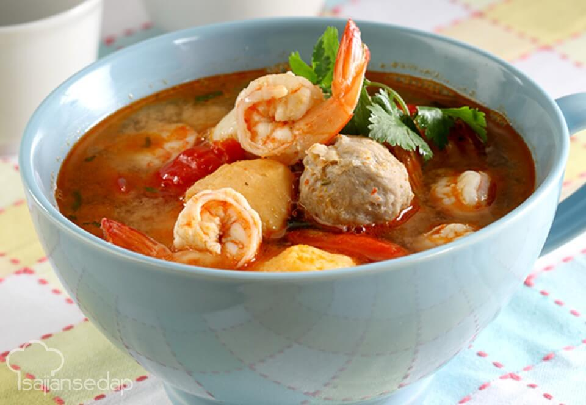
Bakso Pedas
Bakso atau baso adalah jenis bola daging yang lazim ditemukan pada masakan Indonesia dan untuk bakso pedas yang ini juga sangat digemari banyak masyarakat karena masyarakat indonesia kalau tidak pedas tidak afdol, biasanya disajikan dengan mie kuning, siomay , tahu, dan pangsit goreng. Bakso sangat banyak diminati saat musim dingin atau hujan, dimalang juga banyak kedai bakso salah satunya bakso presiden di Jl. Batanghari No.5 Rampal Celaket, Klojen, Kota Malang
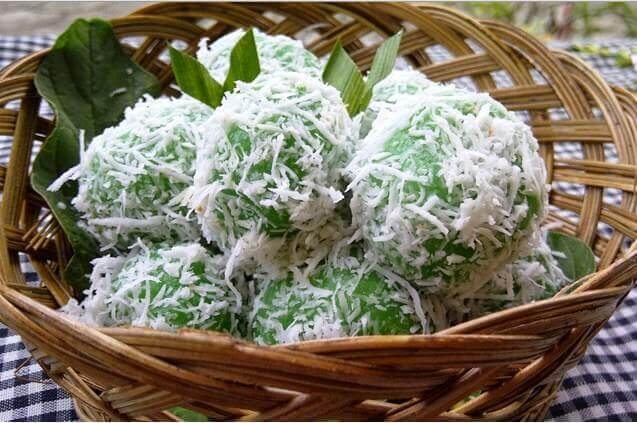
Klepon Legit
Klepon adalah makanan tradisional yang terbuat dari tepung ketan berbentuk bulat dan berisi gula merah serta biasanya bagian luarnya ditaburi parutan kelapa. Ukuran klepon biasanya sebesar kuning telur serta berwarna hijau muda. Klepon merupakan salah satu dari aneka jajan pasar dan paling banyak disukai karena memiliki sifat yang khas bila dimakan, yaitu akan muncrat gulanya dan rasanya manis, gurih dan lezat. Cara makan klepon adalah satu biji klepon dimakan dalam sekali telan agar gulanya tidak tumpah.
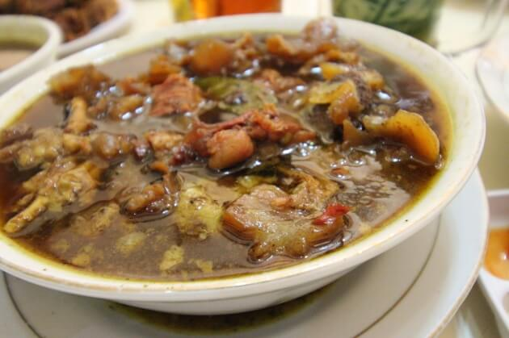
Rawon Rampal
Ciri khas dari Rawon Rampal juga dari penampilan rawon yang lebih pekat tanpa lemak. Hanya ada kuah dan daging sapi dengan potongan cukup tebal yang empuk. Setiap satu panci yang dibuat selalu dicampur dengan satu kilogram bumbu yang di antaranya adalah campuran keluak, kunyit, bawang putih, bawang merah, jahe, serai, lengkuas, dan jeruk purut. Rawon Rampal ini dapat di jumapi di jl. Paanglima Sudirman 71A Klojen

Sate Lilit
Sate Lilit adalah sate varian khas Bali. Sate ini terbuat dari daging ayam, daging sapi yang dicincang, kemudian dicampur dengan parutan kelapa, santan, jeruk nipis, bawang merah, dan merica. Sate lilit terlihat lebih unik. Jika sate biasa berupa daging yang dipotong kecil-kecil lalu ditusuk pada sebuah tusuk sate yang kecil. Sementara sate lilit berupa gumpalan adonan daging yang disematkan pada sebatang tusuk sate yang terlihat lebih besar dari tusuk sate biasa.
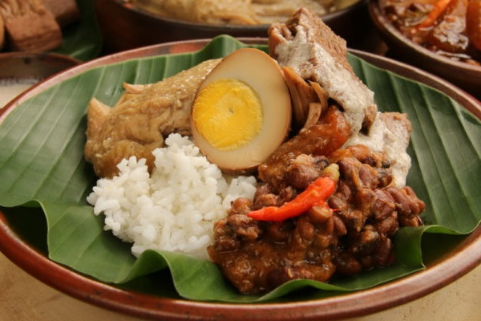
Gudeg
Gudeg adalah makanan tradisional yang terbuat dari Nangka muda (nangka) yang direbus selama beberapa jam dengan gula kelapa serta santan. Dengan dilengkapi dengan berbagai bumbu tambahan membuat Gudeg menjadi terasa manis dilidah dan memiliki rasa yang khas dan enak sesuai dengan selera masyarakat Jawa pada umumnya. Pada penyajiannya, Gudeg biasa di lengkapi dengan nasi putih, ayam, telur rebus, tahu atau tempe, dan rebusan terbuat dari kulit sapi segar atau lebih dikenal dengan nama sambal goreng krecek.
Korean Food
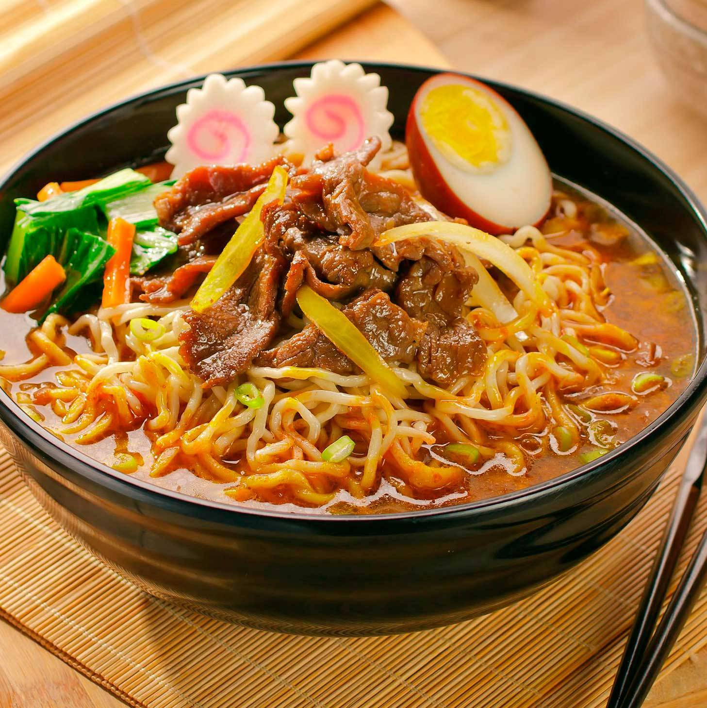Ramen
Ramyeon atau Ramyun adalah hidangan mi kuah ala Korea. Mi ramyeon dapat dibuat dari mi basah atau mi instan, beberapa merek ramyeon instan selain dikonsumsi di Korea Selatan, ada juga yang diekspor ke luar negeri, seperti ke Tiongkok, Hong Kong, Makau, Jepang, dan Indonesia. Ramyeon Korea umumnya bercita rasa agak pedas. Di Korea Selatan, merek yang menguasai pasar adalah Shin Ramyun.

Kimchi
Kimchi adalah makanan tradisional Korea, salah satu jenis asinan sayur hasil fermentasi yang diberi bumbu pedas. Setelah digarami dan dicuci, sayuran dicampur dengan bumbu yang dibuat dari udang krill, kecap ikan, bawang putih, jahe dan bubuk cabai merah. Sayuran yang paling umum dibuat kimchi adalah sawi putih dan lobak. Di zaman dulu, kimchi diucapkan sebagai chim-chae (Hangul: 침채; Hanja: 沈菜) yang berarti "sayuran yang direndam." Di Korea, kimchi selalu dihidangkan di waktu makan sebagai salah satu jenis banchan yang paling umum. Kimchi juga digunakan sebagai bumbu sewaktu memasak sup kimchi (kimchi jjigae), nasi goreng kimchi (kimchi bokkeumbap), dan berbagai masakan lain.
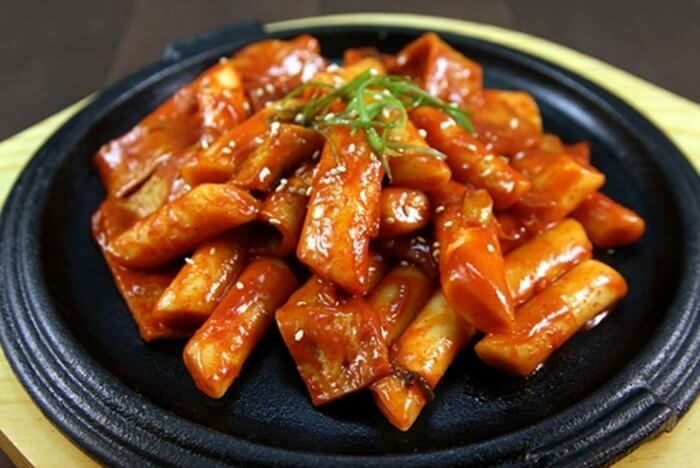
Tteobokki
Tteokbokki adalah penganan Korea berupa tteok dari tepung beras yang dimasak dalam bumbu gochujang yang pedas dan manis. Tteok yang dipakai berbentuk batang atau silinder. Penganan ini merupakan makanan rakyat yang banyak dijual di pojangmacha. Pada awalnya, penganan ini berasal dari masakan istana Dinasti Joseon yang disebut gungjung tteokbokki. Pada waktu itu, masakan ini berupa huintteok yang dimasak dengan kecap asin bersama daging sapi, bagogari, kecambah kacang hijau, peterseli, shiitake, wortel, dan bawang bombay.
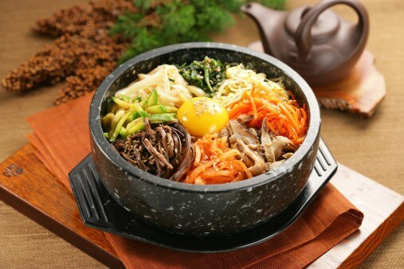
Bibimbap
Bibimbap adalah masakan Korea berupa semangkuk nasi putih dengan lauk di atasnya berupa sayur-sayuran, daging sapi, telur, dan saus pedas gochujang. Namanya secara harafiah berarti "nasi campur" yang berasal dari kata 비빔 (campur) dan 밥 (nasi). Sebelum dimakan, nasi dan lauk diaduk menjadi satu. Bibimbap memiliki variasi yang banyak menurut daerahnya di Korea. Kota Jeonju di Jeolla Utara adalah kota asal variasi bibimbap daerah yang paling terkenal di Korea. "Jeonju bibimbap" (nasi campur Jeonju) merupakan bibimbap yang berisi lauk pauk yang paling banyak di Korea.
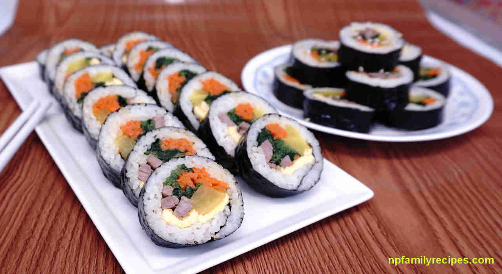
Gimbap
Gimbap adalah jenis makanan Korea yang terdiri dari nasi yang dibungkus dengan rumput laut. Gimbap populer sebagai makanan yang dibawa piknik, hiking atau aktivitas lain di luar ruangan
Chinesse Food
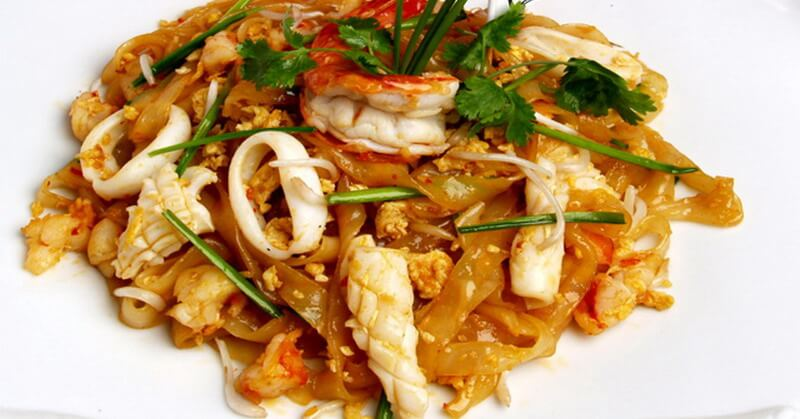Kwetiau
Hampir sama dengan bakmi, kwetiau merupakan mi yang juga banyak peminatnya di Indonesia. Bedanya hanya pada tekstur dan bentuknya saja. Kwetiau memiliki tekstur lebih kenyal dan bentuknya lebih lebar.
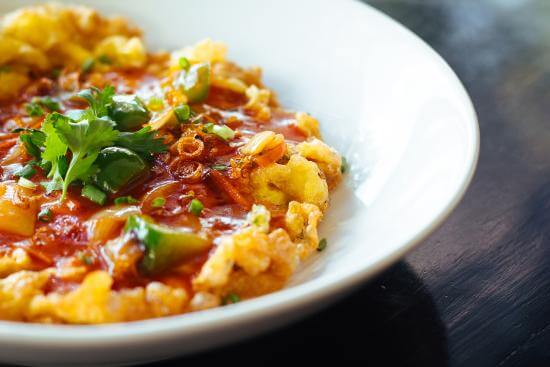
Puyonghai
Puyonghai adalah masakan Tionghoa yang dibuat dari telur yang didadar dengan campuran berupa sayuran,daging, atau makanan laut. Isi campuran bisa berupa cincangan halus daging ayam, daging sapi, daging kepiting, dan sebagainya. Fu yong hai dimakan bersama saus asam manis yang biasanya dibuat dari tomat dan kacang polong, tetapi ada juga saus yang disertai dengan potongan nanas di dalamnya.
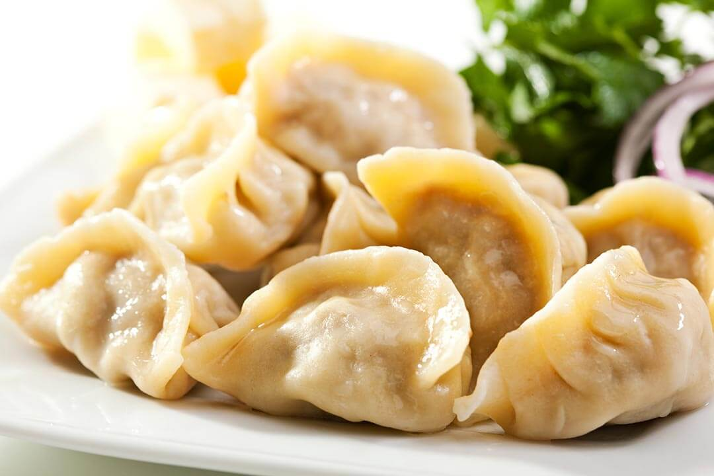
Jiaozi
Jiaozi adalah daging ayam atau udang dan sayuran yang dicincang dan dibungkus lembaran tepung terigu. Adonan kulit dibuat dari campuran tepung terigu, air, dan garam dapur. Makanan ini dimatangkan dengan cara direbus. Di Jepang, makanan serupa disebut gyōza, sementara di Korea disebut mandu. Jiaozi tidak sama dengan pangsit (wonton). Kulit jiaozi lebih tebal dari pangsit. Dari peninggalan Zaman Musim Semi dan Gugur di Cina diketahui bahwa orang pada zaman itu sudah memakan jiaozi.
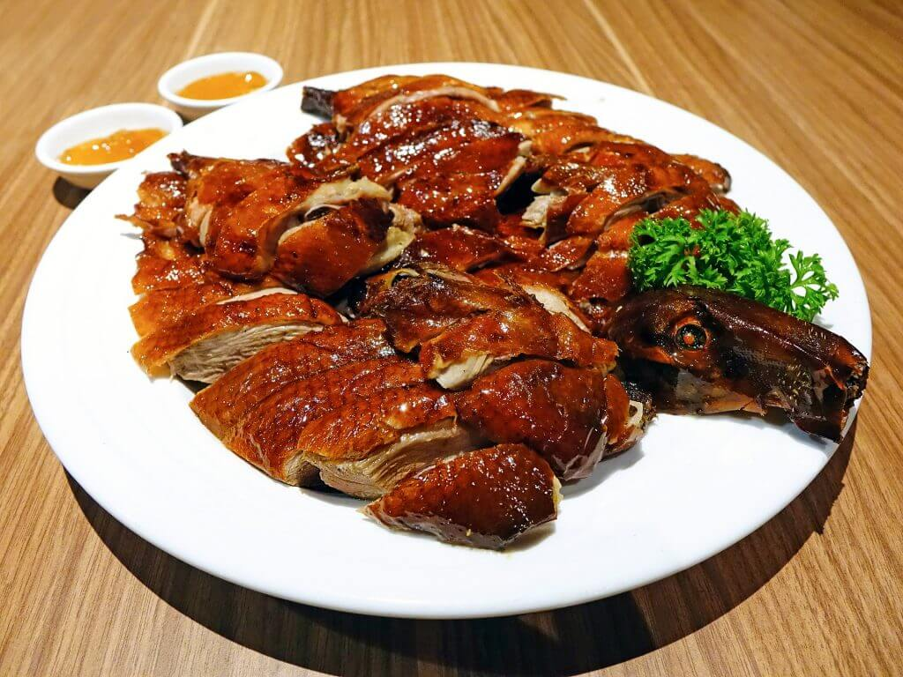
Kaoya
Kaoya adalah istilah yang digunakan masyarakat Cina untuk menyebut hidangan bebek peking. Masakan tradisional Cina yang satu ini berasal dari kota Beijing dan saat ini telah menyebar hingga ke seluruh dunia. Kaoya atau bebek peking panggang biasa disantap secara langsung dengan diiris halus atau juga disantap bersama kulit pancake khas Cina.
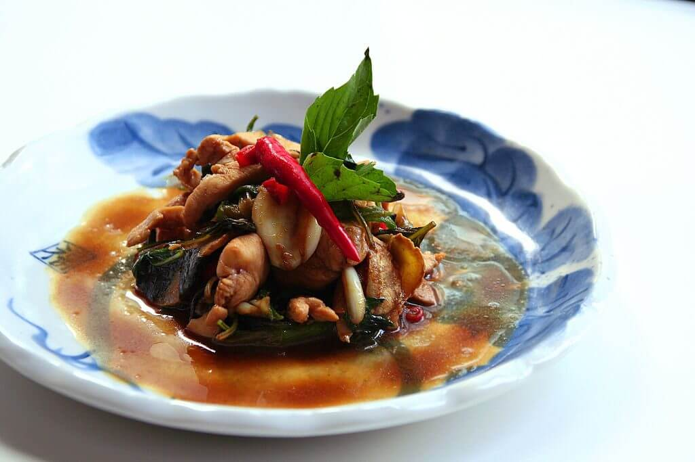
Sanbeiji
Sesuai dengan istilahnya sanbeiji yang berarti tiga cangkir, daging ayam dalam hidangan ini dimasak dengan tiga cangkir bumbu yakni secangkir anggur beras, secangkir kecap manis dan secangkir lemak daging babi
Terimakasih telah berkunjung :) Jika ada saran dan kritik silahkan tulis dibawah